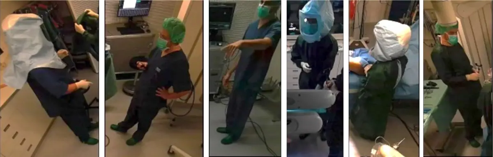
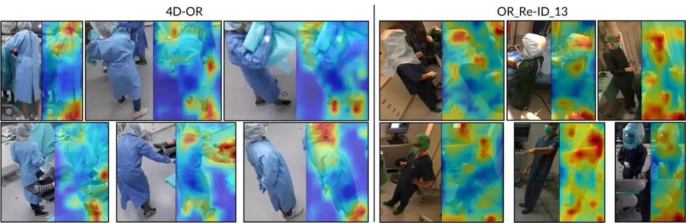
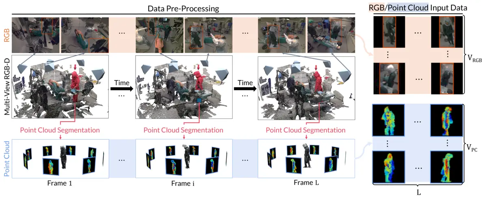
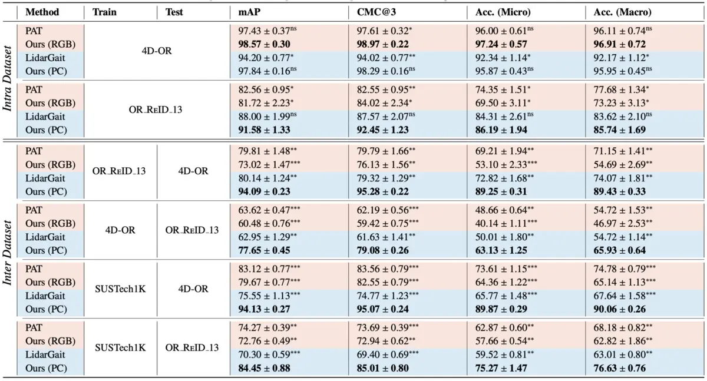
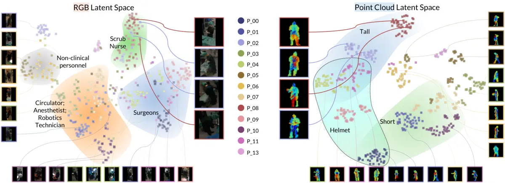
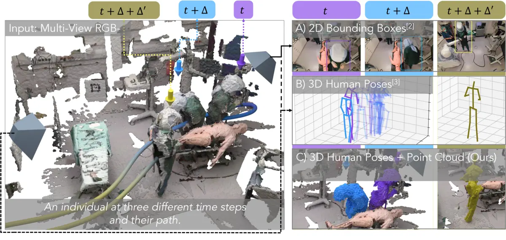
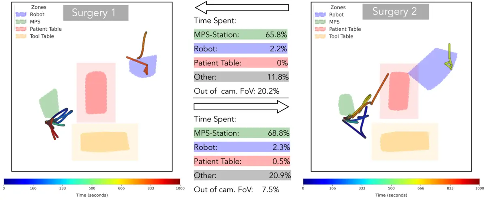

Beyond Role-Based Surgical Domain Modeling: A Staff-Centric Approach
TL;DR:
We challenge the traditional, role-based view of the operating room and propose a "staff-centric" model that recognizes the unique impact of each individual on surgical dynamics.
Surgical data science has aimed to optimize operating room (OR) workflows by analyzing the roles of the surgical staff. However, this approach treats team members as interchangeable parts, failing to capture the nuanced differences between them.
Given that factors like team familiarity and individual habits significantly affect surgical outcomes, from operative times to complication rates, we argue that this role-based view is not enough. We propose a fundamental shift towards a staff-centric model where each person is recognized as a unique individual, not simply an abstract role.
To see the limitation of the role-centric model, we show two different teams performing the same surgery with the same roles. Notice how their coordination and use of the space differ, highlighting how much team dynamics can change even when roles remain the same.
Challenges in Surgical Operating Rooms
The surgical OR is a challenging environment compared to general environments where individuals are easily distinguished by their clothing and faces. Team members wear standardized smocks and gowns to maintain sterility. This homogeneity makes traditional appearance-based identification methods fail.

Generalizable Re-Identification with Geometry
Deep neural networks have a strong bias towards texture. In the OR, these networks learn spurious correlations like street shoes or distinct eyewear visible beneath gowns. When these artifacts vanish in realistic settings, the models fail.

We shift our focus to geometry and articulated motion. Our approach encodes personnel as sequences of 3D point clouds to disentangle identity-relevant shape from appearance confounders.
Methodology & Results
We first segment individuals from fused 3D point clouds, then render multi-view 2D depth maps to feed into a ResNet-9 encoder. Features are aggregated over time to generate identity embeddings.

Our point cloud method outperforms RGB counterparts by a 12% margin in accuracy on authentic clinical data. More importantly, it demonstrates superior generalization across different clinical environments.


Robust Tracking (TrackOR)
Maintaining persistent identities is difficult when staff frequently leave and re-enter. TrackOR integrates our geometric signature into an online tracking pipeline to handle temporary absences and occlusions.

3D Activity Imprints
We propose 3D activity imprints to visualize how individuals utilize the OR space. These imprints provide insight into the coordination of surgical teams and usage patterns for a given surgery.
Temporal Pathways
Building on persistent trajectories, we develop Temporal Pathways to analyze dynamic visualizations revealing the specific path staff members take throughout the OR over time.
